Numim transformare izotermă transformarea pe parcursul
căreia numărul de moli şi temperatura sistemului termodinamic rămân nemodificate.
Numim transformare izotermă transformarea pe parcursul
căreia numărul de moli şi temperatura sistemului termodinamic rămân nemodificate.
Elemente de termodinamică. |
Transformări simple ale gazului ideal |
E-6. |
Transformarea izotermă |
Numim transformare izotermă transformarea pe parcursul
căreia numărul de moli şi temperatura sistemului termodinamic rămân nemodificate.
 Provocarea 6-1
Provocarea 6-1
Care este relaţia dintre parametrii variabili ai unui gaz ideal care participă la o transformare izotermă?
În oricare stare de echilibru a gazului ideal, între parametrii care caracterizează starea acestuia există relaţia dată de ecuaţia de stare:
| 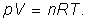 | (1) |
Dacă exprimi presiunea gazului, obţii:
Legea transformării izoterme: Presiunea gazului ideal este
invers proporţională cu volumul gazului:
| (2) |
sau, echivalent:
| 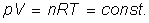 | (3) |
Provocarea 6-2
Un gaz ideal se află într−o stare iniţială, caracterizată de parametrii (p1, V1, n, T). Gazul participă la o transformare izotermă până într−o stare finală, caracterizată de parametrii (p2, V2, n, T), ca în figura 6−1.
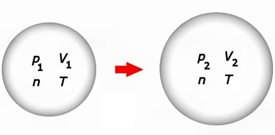
Figura 6-1. O transformare izotermă a unui gaz ideal.
Care este relaţia dintre parametrii care caracterizează stările iniţială şi finală ale gazului ideal?
Dacă utilizezi forma (3) a legii transformării izoterme, obţii imediat:
| 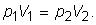 | (4) |
Relaţia obţinută îţi permite să calculezi oricare dintre parametrii variabili ai gazului ideal, dacă îi cunoşti pe ceilalţi trei.
Provocarea 6-3
Cum ai reprezenta grafic stările prin care trece un gaz ideal pe parcursul unei transformări izoterme?
Într−o transformare izotermă, parametrii variabili sunt presiunea şi volumul gazului. Într−un sistem de axe, în care una dintre axe este presiunea, iar cealaltă este volumul, fiecărei stări a gazului îi corespunde un punct de coordonate (p, V), numite coordonate Clapeyron (figura 6−2).
 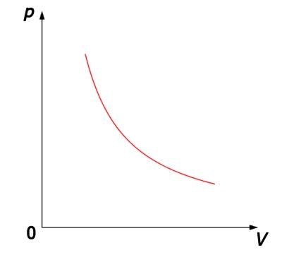
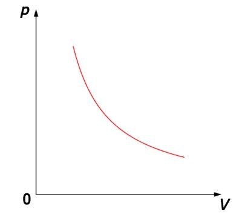
Figura 6-2. Reprezentarea grafică a unei transformări izoterme, în coordonate p−V.
În coordonate p−V, reprezentarea grafică a unei transformări izoterme a gazului ideal este un arc de hiperbolă, simetrică faţă de prima bisectoare a sistemului de coordonate. Arcul de hiperbolă intersectează prima bisectoare mai departe de origine pentru o valoare mai mare a cantităţii constante din legea transformării izoterme.
Legea transformării izoterme a fost descoperită experimental în 1662 de către irlandezul Robert Boyle, cronologic, prima lege a gazelor care a fost descoperită.
În cazul aerului, la presiuni sub cea atmosferică normală şi temperatura 298 K, abaterile faţă de relaţia (3) sunt mai mici de 1% (tabelul 6−1).
Tabelul 6-1. Valori experimentale pentru un proces izoterm al aerului, la temperatura 298 K.
| V (mL) |
p (kPa) |
pV (J) |
| 10,0 | 101 | 1,01 |
| 20,0 | 50,4 | 1,01 |
| 30,0 | 33,6 | 1,01 |
| 40,0 | 25,4 | 1,02 |
În aceste condiţii de presiune şi temperatură, aerul şi, în general, gazele reale se comportă asemănător modelului gazului ideal.
Provocarea 6-4
Cât este variaţia energiei interne a gazului ideal care participă la transformarea izotermă prezentată în figura 6−1?
Energia internă a gazului ideal depinde doar de temperatura acestuia, astfel că, într−o transformare izotermă energia internă nu se modifică pentru că nu se modifică temperatura gazului:
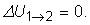
Provocarea 6-5
Cât sunt lucrul mecanic şi cantitatea de căldură transferate între gazul ideal şi mediul său pe parcursul transformării izoterme prezentată în figura 6−1??
Din principiul I al termodinamicii, în cazul unei transformări izoterme, obţii:
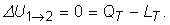
De aici, obţii imediat:
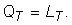
Deoarece energia internă a gazului ideal nu se modifică, dacă gazul primeşte energie sub formă de căldură, o va elibera sub formă de lucru mecanic. Reciproc, dacă primeşte energie sub formă de lucru mecanic, o va elibera sub formă de căldură.
Calculul lucrului mecanic transferat într−un proces izoterm este dificil, deoarece presiunea se modifică pe parcursul procesului.
Poţi însă aproxima transformarea izotermă ca fiind o succesiune de transformări izobare şi izocore, care urmăresc transformarea izotermă oricât de aproape doreşti (figura 6−3).
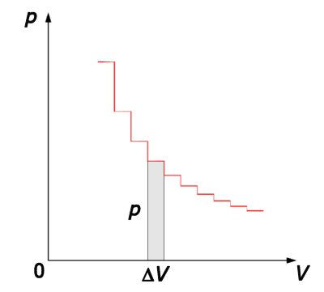
Figura 6-3. Aproximarea transformării izoterme printr−o succesiune de
transformări izobare şi izocore.
Pe "palierele" izobare, lucrul mecanic schimbat de gaz este p·ΔV, iar pe porţiunile izocore, lucrul mecanic este nul. Pe reprezentarea grafică, lucrul mecanic pentru fiecare "palier" este chiar aria dreptunghiului limitat de palier şi axa volumelor: p este "înălţimea" dreptunghiului, iar ΔV este "lăţimea" dreptunghiului.
Pe măsură ce aproximaţia devine mai fină (figura 6−4), rezultă că:
În coordonate p−V, lucrul mecanic corespunde
ariei delimitată de curba transformării şi axa volumelor.
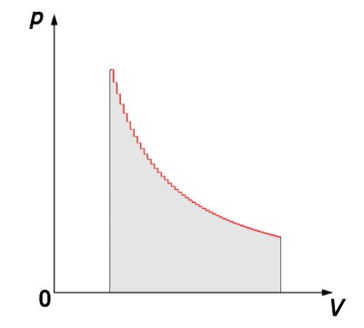
Figura 6-4. Semnificaţia grafică a lucrului mecanic în coordonate p−V: aria
delimitată de curba transformării şi axa volumelor.
O aproximare mai fină presupune însumarea ariilor mai multor "fâşii" de arie mai mică. Calculul conduce la următorul rezultat:
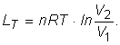
Rezultă imediat pentru cantitatea de căldură schimbată de gazul ideal cu mediul într−un proces izoterm:
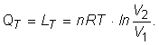
Provocarea 6-6
Cât te aştepţi să fie căldura molară la temperatură constantă?